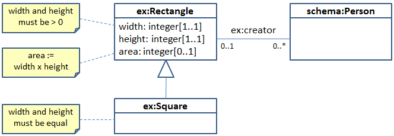

This document is no longer maintained and is out of date. For the latest specification, see SHACL Specification.
LDOM (Linked Data Object Model) is an RDF-based modeling language that is compatible with Linked Data principles and leverages some object-oriented concepts to the Web. LDOM makes it possible to define classes together with their associated properties, and to specify additional constraints that valid members of those classes should fulfill. These additional constraints are expressed using SPARQL, yet the structural definitions of associated properties can also be used by tools without a SPARQL processor. In addition to a vocabulary for structural constraints, LDOM includes modularization features that make it possible to define new modeling terms (SPARQL functions and templates) based on executable semantics.
LDOM has a wide range of potential use cases. Its alignment with object-oriented principles means that LDOM can be used to store and share data objects that represent the "model" in applications built with a Model-View-Control architecture. In contrast to most object-oriented systems, RDF adds the value of having a unique identification mechanism for objects (via their URIs), thus also allowing data models to reference each other across the web. Through its foundation on Linked Data principles, LDOM data models are self-describing, which means that applications can dynamically learn about the behavior of objects by resolving URIs. Finally, the structural definitions of classes and properties can be exploited by user interface builders to select suitable display and input widgets.
This document introduces LDOM to people familiar with basic concepts of RDF and SPARQL. A simple model about rectangles and squares is used to introduce all major features of LDOM, including class definitions, constraints, rules, functions and templates. This document can serve as the "Hello, World" example of LDOM. This primer is a possible companion to another document (to be written) that serves as a language reference and full specification.
For the ongoing discussion about the potential name of this technology, see the W3C wiki page.
LDOM (Linked Data Object Model) is a modeling language for linked data, based on a minimum sub-set of RDF Schema and object-oriented principles. Features of LDOM include:
LDOM is based on RDF and is compatible with Linked Data principles, making it possible to mix LDOM declarations with models created in other semantic web languages. Other sections elaborate on the relationships of LDOM with RDF Schema and OWL.
This document uses a running example model illustrated in the following UML diagram. In a nut shell, there is a class Rectangle which has a subclass Square, both in the example namespace "ex". All Rectangles can have a width and a height, both integers greater than 0. The area of a Rectangle gets computed by multiplying width and height. Squares must have equal width and height. Rectangles can have one creator, which must be an instance of the class schema:Person.
LDOM definitions are represented in RDF and can be serialized in multiple RDF formats. The example snippets in this document use Turtle [[turtle]] notation. TODO: Future versions should have this switchable between Turtle and JDON-LD [[json-ld]]. You should be familiar with basic RDF concepts [[rdf11-concepts]] such as triples and (for the advanced concepts of LDOM) with SPARQL [[sparql11-overview]].
The Turtle source code of the complete LDOM file can be found at ldomsquare.ldom.ttl.
The LDOM system vocabulary is defined in itself, using its own LDOM File. This file also includes in-line comments for open issues as well as many technical details that are omitted in this primer for space considerations.
Within this document, the following namespace prefix bindings are used:
| Prefix | Namespace |
|---|---|
| ldom: | http://www.w3.org/ns/ldom/core# |
| rdf: | http://www.w3.org/1999/02/22-rdf-syntax-ns# |
| rdfs: | http://www.w3.org/2000/01/rdf-schema# |
| xsd: | http://www.w3.org/2001/XMLSchema# |
| ex: | http://example.com/ns# |
Basic class definitions are covered by a subset of RDF Schema (see relationship with RDF Schema), as illustrated in the following example source code:
ex:Rectangle a rdfs:Class ; rdfs:subClassOf rdfs:Resource ; rdfs:label "Rectangle" . ex:Square a rdfs:Class ; rdfs:subClassOf ex:Rectangle ; rdfs:label "Square" .
The type rdfs:Class (or its subclasses such as owl:Class)
are used to declare a class. rdfs:subClassOf is used to indicate that
all instances of a subclass are also instances of its superclass(es).
The commonly used properties rdfs:label and rdfs:comment
are recommended to declare human-readable labels and documentation.
The reuse of the standard RDF Schema terms means that LDOM models can be readily mixed with existing Linked Data models.
LDOM introduces a property ldom:abstract that can be set to true
for classes that should not be directly instantiated.
Furthermore, classes may be marked ldom:private to indicate that they
are only meant to be used inside of the graph that they have been defined in.
This can be used to discourage instantiation outside of controlled scenarios.
Note that in contrast to many object-oriented languages, RDF Schema classes may have
multiple superclasses.
The root class in RDF Schema is rdfs:Resource, and top-level classes
in an LDOM model must state explicitly that they are rdfs:subClassOf rdfs:Resource.
In other words, each valid LDOM class needs to have at least one named superclass.
Object-oriented systems have a concept of properties (or fields) that hold attributes and relationships of a given class. The following sections explain how such property attachments can be represented in LDOM.
It is common (in UML etc) to specify the name of a property and its cardinality (min/max value count) as well as the value type. In LDOM, these declarations can be attached to a class as follows:
ex:Rectangle a rdfs:Class ; rdfs:subClassOf rdfs:Resource ; rdfs:label "Rectangle" ; ldom:property [ a ldom:PropertyConstraint ; # This type declaration is optional ldom:predicate ex:height ; ldom:minCount 1 ; ldom:maxCount 1 ; ldom:valueType xsd:integer ; rdfs:label "height" ; rdfs:comment "The height of the Rectangle." ; ] ; ldom:property [ ldom:predicate ex:width ; ldom:minCount 1 ; ldom:maxCount 1 ; ldom:valueType xsd:integer ; rdfs:label "width" ; rdfs:comment "The width of the Rectangle." ; ] ; ldom:property [ ldom:predicate ex:creator ; ldom:maxCount 1 ; ldom:valueType schema:Person ; rdfs:label "creator" ; rdfs:comment "The creator of the Rectangle." ; ] ;
The examples in this document are (currently) all written in Turtle, but here is a snippet previewing how the JSON-LD could look like:
{
"@context" : [
"http://www.w3.org/ns/ldom/context.jsonld",
{
"ex" : "http://example.com/ns#"
}
],
"@graph" : [
{
"@id" : "http://example.com/ns",
"@type" : "Graph",
"library" : "http://www.w3.org/ns/ldom/core",
"label" : "Test Graph",
"comment" : "This is a comment."
},
{
"@id" : "ex:Rectangle",
"@type" : "Class",
"subClassOf" : "rdfs:Resource",
"label" : "Rectangle",
"property" : [
{
"predicate" : "ex:width",
"minCount" : 1,
"maxCount" : 1,
"valueType" : "xsd:integer",
"label" : "width",
"comment" : "The width of the Rectangle."
},
...
]
}
]
}
Tools that understand LDOM can use the information above for many purposes. For example, they can figure out which fields should appear for an input form, and what values those fields can have, as well as labels and comments. Furthermore, they can verify that a given instance of Rectangle has the expected value types and cardinalities for its properties.
The system property ldom:property is used to link a class with its
property declarations. Properties get inherited by subclasses.
The values of this property are nodes with the following properties:
| Property | Description |
|---|---|
ldom:predicate |
Required. Must point to the URI of an RDF property used to store the values of the property. |
ldom:minCount |
Type: integer >= 0, the minimum number of values required. Defaults to 0. |
ldom:maxCount |
Type: integer >= 0, the maximum number of values required. Defaults to unlimited. |
ldom:valueType |
an instance of rdfs:Class, the type or datatype that all values of the property
must have.
|
ldom:allowedValues |
Type: ldom:Set (with property ldom:member), points to a set enumerating the allowed values. |
ldom:hasValue |
points to a specific value that the property must have. |
rdfs:label |
A human-readable label of the property in the context of the associated class. |
rdfs:comment |
A description of the property's role in the context of the associated class. |
In addition to those basic property characteristics, it is possible to use others such as min/max value ranges for properties that have datatype literals as values:
ex:Rectangle a rdfs:Class ; rdfs:subClassOf rdfs:Resource ; rdfs:label "Rectangle" ; ldom:property [ ldom:predicate ex:height ; ldom:maxCount 1 ; ldom:valueType xsd:integer ; ldom:minExclusive 0 ; ... ] ;
The following built-in constraints are available for datatype values. (XML schema has additional facets: whiteSpace, fractionDigits, totalDigits. Schema.org also suggests: stepValue).
| Property | Description |
|---|---|
ldom:length |
Type: xsd:integer, number of characters of valid values. |
ldom:maxLength |
Type: xsd:integer, maximum number of characters of valid values. |
ldom:minLength |
Type: xsd:integer, minimum number of characters of valid values. |
ldom:maxExclusive |
Type: the same as the ldom:valueType of the surrounding property. |
ldom:maxInclusive |
Type: the same as the ldom:valueType of the surrounding property. |
ldom:minExclusive |
Type: the same as the ldom:valueType of the surrounding property. |
ldom:minInclusive |
Type: the same as the ldom:valueType of the surrounding property. |
ldom:pattern |
Type: xsd:string, a regular expression to match. |
The following example illustrates how a valid instance of the rectangle class
can look like. By virtue of the rdf:type triple (abbreviated as
a in Turtle), a user interface tool could select appropriate input
widgets or validate the instance.
ex:TestRectangle a ex:Rectangle ; ex:creator ex:PersonWithEmail ; ex:height 6 ; ex:width 7 ; rdfs:label "Test rectangle" .
Due to the triple-based data model of RDF, it is possible to "walk" a relationship
in both directions - from subject to object and from object to subject.
LDOM can be used to declare that a property is associated with a class, even
if the predicate is actually used in the inverse direction.
As shown below, the system property ldom:inverseProperty is used
in such cases, and very similar characteristics as previously mentioned can
be applied in these inverse property declarations.
schema:Person ldom:inverseProperty [ ldom:predicate ex:creator ; ldom:valueType ex:Rectangle ; rdfs:label "created rectangle" ; rdfs:comment "Links a Person with all rectangles that he or she created." ; ] ...
The above instructs a user interface builder that persons can have a property
labeled "created rectangle" and defines a suitable value type.
Not shown in the example are ldom:minCount and ldom:maxCount,
because there may be 0 to infinitely many values in this direction.
Declaring an inverse property is semantically equivalent to having a normal property starting in the related class. From the perspective of the full data model, declaring an inverse property is therefore redundant. However, having an inverse property is often useful to provide a more complete picture in the context of a single resource or class. Furthermore it becomes possible to define more suitable human-readable labels and comments for the inverse direction.
The property declarations shown in the previous chapter define conditions that
all valid instances of a class need to fulfill.
They do this in a declarative language with a limited number of properties
such as ldom:maxCount.
However, in many cases it is necessary to define additional conditions
that are used to verify valid data, or to simply communicate the desired
semantics of a model's elements.
For example, the width and height of a Square must be equal.
These constraints can be attached to class definitions using ldom:constraint
as shown in the next example:
ex:Square
a rdfs:Class ;
rdfs:label "Square" ;
rdfs:subClassOf ex:Rectangle ;
ldom:constraint [
ldom:message "Width and height of a Square must be equal" ;
ldom:path ex:width ;
ldom:path ex:height ;
ldom:sparql """
ASK {
?this ex:width ?width .
?this ex:height ?height .
FILTER (?width != ?height) .
}
""" ;
] ;
.
Open issue: Many people find it confusing that the expression seems to work "backwards" and only find the counter-examples. So the term "constraint" might be misleading. An alternative name "exception" has been proposed (although this term has a different meaning in programming languages). Furthermore, many values of ldom:constraint are in fact template calls, and the user doesn't even see the SPARQL query (e.g. ldon:minCount uses a positive direction even if its internal SPARQL query checks for counter-examples).
The example above uses SPARQL to implement an executable test.
The SPARQL query must return true if the condition is violated, using the variable
?this to refer to the currently tested instance.
The property ldom:constraint is linking a class with the additional
constraints that it needs to fulfill.
Each of the values of ldom:constraint can have a ldom:sparql
query (ASK, SELECT or CONSTRUCT), or they can be instances of Templates as shown
later.
In SPARQL-based constraints, the properties ldom:message, ldom:path
and ldom:level (with values ldom:Error,
ldom:Warning and ldom:FatalError) can be used to provide
additional information on the constraint violation.
As alternatives to ASK, you can use SPARQL SELECT or CONSTRUCT queries to take more control over which constraint violations to create. While a little bit more verbose, one advantage of those syntaxes is greater flexibility in how to build error messages etc. The following example implements the same error condition as shown above, but using a CONSTRUCT query. An example of SELECT-based constraints can be found below.
ex:Square
a rdfs:Class ;
rdfs:label "Square" ;
rdfs:subClassOf ex:Rectangle ;
ldom:constraint [
ldom:sparql """
CONSTRUCT {
_:cv a ldom:Error ;
ldom:root ?this ;
ldom:message "Width and height of a Square must be equal" ;
ldom:path ex:width ;
ldom:path ex:height
}
WHERE {
?this ex:width ?width .
?this ex:height ?height .
FILTER (?width != ?height) .
}
""" ;
] ;
.
TODO: This section needs work - templates are used but not introduced yet at this stage. The problem is that we want non-SPARQL experts to still be able to use those templates even if they don't understand how they work internally.
In addition to constraints defined in SPARQL, LDOM makes it possible to define constraints
using higher-level elements called Templates.
(How to define your own Templates is introduced later.)
The following example demonstrates the use of the Template ldom:ShapeConstraint
which links a property with a "shape" that it needs to fulfill:
ex:Rectangle ldom:constraint [ a ldom:ShapeConstraint ; ldom:predicate ex:creator ; ldom:some [ ldom:property [ ldom:predicate schema:email ; ldom:minCount 1 ; ] ; ] ; ] ;
The above means that at least one of the values of the property ex:creator
must be an object that has at least one schema:email value.
This constraint gets evaluated together with the constraints defined by the property
declarations, which means that the ex:creator must also be an instance
of schema:Person.
The property ldom:some means "at least one" - use ldom:all
to specify that all values of the property must match the given shape.
Note that the matching values do not have to be instances of the given shape,
i.e. no rdf:type triple is required.
Shapes can be nested, e.g. using additional ldom:constraint values.
Templates can also be used as values of ldom:property, as long as
the template is a subclass of the system template ldom:PropertyConstraint.
The LDOM core includes two such templates:
ldom:DerivedPropertyConstraint
and ldom:PrimaryKeyProperty.
Here is an example of the latter, declaring that the values of the property
ex:isoCode must be unique for each instance of ex:Country.
ex:Country
a rdfs:Class ;
rdfs:subClassOf rdfs:Resource ;
rdfs:label "Country" ;
ldom:property [
a ldom:PrimaryKeyPropertyConstraint ;
ldom:predicate ex:isoCode ;
ldom:valueType xsd:string ;
ldom:uriStart "http://example.org/country-" ;
rdfs:label "ISO code" ;
] ...
This type of constraint also specifies how the URIs of instances need to
be constructed, by concatenating the provided ldom:uriStart
with the value of the primary key.
Tools can use this information to automatically create URIs for newly
created instances, and for data imported from external non-RDF sources
such as relational databases.
Another built-in template is ldom:OrConstraint which can be
used to combine multiple other constraint templates to express that at least one
of two conditions need to be satisfied.
The following example expresses that a ex:RectangleWithArea must either
have ex:width and ex:height, or a value for
ex:area:
ex:RectangleWithArea a rdfs:Class ; rdfs:subClassOf ex:Rectangle ; ldom:constraint [ a ldom:OrConstraint ; ldom:shape1 [ ldom:property [ ldom:predicate ex:width ; ldom:minCount 1 ; ] ; ldom:property [ ldom:predicate ex:height ; ldom:minCount 1 ; ] ] ; ldom:shape2 [ ldom:property [ ldom:predicate ex:area ; ldom:minCount 1 ; ] ] ] ; .
The SPARQL query behind the ldom:OrConstraint uses a built-in
helper function ldom:hasShape to recursively evaluate
the nested shapes. Based on this function, similar templates (such as exclusive-or)
could be defined.
Many other kinds of templates can be used from third-party template libraries that provide high-level vocabularies for common design patterns.
So far all constraint examples had been attached to classes, in an object-oriented
style. This has the benefit of a natural way of organizing constraints, and makes
it easier for an engine to determine which constraints are relevant for a given
resource only. The variable ?this is used in those to refer to the
currently evaluated instance.
In some cases, it is necessary to define constraints that do not have a local
object scope, but rather apply globally.
These can be expressed by instantiating ldom:GlobalConstraint,
as shown in the following example.
ex:MyConstraint
a ldom:GlobalConstraint ;
ldom:message "Deprecated properties should not be used anywhere." ;
ldom:level ldom:Warning ;
ldom:sparql """
SELECT ?root ?predicate ?value
WHERE {
?root ?predicate ?value .
?predicate owl:deprecated ?any .
}
""" ;
.
By default, these constraints are assumed to have a SPARQL query, but
it is also possible to instantiate templates.
Global constraints should be named with a URI (in this example: ex:MyConstraint)
so that they are easier to reference and manage.
LDOM Templates are "boxed" queries that can be used as values of
ldom:constraint and ldom:property
(as well as ldom:rule if that gets included into the standard).
The role of a template is to encapsulate a reusable piece of SPARQL logic
so that users do not need to reinvent the wheel.
Templates hide the complexity of the underlying SPARQL query and are therefore
suitable for people who are not familiar with SPARQL.
The following example declares a LDOM template that can be used for
constraints to express that the values of a given property shall be
greater than 0.
ex:PositivePropertyValueConstraint
a ldom:ConstraintTemplate ;
rdfs:subClassOf ldom:TemplateConstraint ;
rdfs:label "Positive property value constraint" ;
ldom:labelTemplate "Values of property {?property} must be > 0" ;
rdfs:comment """
A template that can be used to define a LDOM constraint on a given property
(ex:property) to make sure that the values of that property are > 0.
""" ;
ldom:argument [
ldom:predicate ex:property ;
ldom:valueType rdf:Property ;
rdfs:comment "The property to constrain (e.g. ex:width or ex:height)." ;
] ;
ldom:sparql """
SELECT (?property AS ?path) ?message
WHERE {
?this ?property ?value .
FILTER (?value <= 0) .
BIND (CONCAT("Property ", ldom:label(?property),
" must only have positive values, but found ",
xsd:string(?value)) AS ?message) .
}
""" ;
.
In the example above, the template takes an argument, as specified by the
ldom:argument. This argument is represented by a value of
the property ex:property which is mapped to the variable
?property when the query executes.
Here is an example that instantiates, or "calls", the template to
define constraints on the properties ex:width and ex:height for all instances
of the class ex:Rectangle.
ex:Rectangle ... ldom:constraint [ a ex:PositivePropertyValueConstraint ; ex:property ex:height ; ] ; ldom:constraint [ a ex:PositivePropertyValueConstraint ; ex:property ex:width ; ] .
When a LDOM engine encounters such a constraint definition, it will
execute the ldom:sparql body of the template and pre-bind the declared
argument variables with the values specified in the template call.
In the case of ex:height, the template's body basically becomes the following,
where every appearance of the variable ?property has been replaced with
the constant ex:height.
SELECT (ex:height AS ?path) ?message
WHERE {
?this ex:height ?value .
FILTER (?value <= 0) .
BIND (CONCAT("Property ", ldom:label(ex:height),
" must only have positive values, but found ", xsd:string(?value)) AS ?message) .
}
LDOM templates make it possible to create libraries of reusable constraints
and rules (and other use cases), so that users do not need to learn SPARQL.
The LDOM standard comes with several of such reusable constraints including
ldom:PropertyConstraint and ldom:Argument
which is used by LDOM itself to declare the arguments of templates.
The example above highlights that LDOM templates can be used to create higher-level
modeling languages that introduce constructs such as the
ex:PositivePropertyValueConstraint above together
with semantics that are executable by any LDOM-compliant engine.
At the same time, high-level elements such as the property declarations can also be used by
other engines that do not necessarily rely on SPARQL.
Some applications may only support certain templates as a controlled
vocabulary. For example, a JavaScript client form engine may only
support property definitions with value type and min/max cardinality.
The class ldom:Profile can represent such sets of templates,
as illustrated in the following example.
Here, an application could use the profile ex:SimpleFormProfile
to display warnings if an incoming LDOM model uses features outside of
its profile.
ex:SimpleFormProfile a ldom:Profile ; ldom:member ldom:AbstractCountPropertyConstraint ; # defines ldom:min/maxCount ldom:member ldom:AbstractValueTypePropertyConstraint . # defines ldom:valueType
LDOM Functions are similar to Templates in their syntax, but they are used to
declare new SPARQL functions based on an encapsulated, reusable query.
The following snippet defines a function ex:computeArea that takes
a Rectangle as its argument and returns an integer that is the result of
multiplying the Rectangle's width with its height.
ex:computeArea
a ldom:Function ;
rdfs:subClassOf ldom:Functions ;
rdfs:label "compute area" ;
rdfs:comment "Computes the area of a given rectangle (?arg1) as the product of its width and height." ;
ldom:argument [
ldom:predicate ldom:arg1 ;
ldom:valueType ex:Rectangle ;
rdfs:comment "The rectangle whose area to compute." ;
] ;
ldom:sparql """
SELECT ((?width * ?height) AS ?result)
WHERE {
?arg1 ex:width ?width .
?arg1 ex:height ?height .
}
""" ;
ldom:returnType xsd:integer ;
.
In LDOM-compliant SPARQL processors, this new function can be used such as in the following example:
SELECT *
WHERE {
?rectangle a ex:Rectangle .
FILTER (ex:computeArea(?rectangle) >= 100) .
}
LDOM functions have a SELECT query as their body, and this query needs to have one
result variable (here: ?result). The first binding of this variable will be used
as result of the function execution. The execution mechanism is illustrated in the
following diagram.
LDOM includes a special kind of property constraints for properties that
are computed (or derived or inferred) from other values.
A good example of this is the ex:area property for rectangles:
ex:Rectangle ... ldom:property [ a ldom:DerivedPropertyConstraint ; ldom:predicate ex:area ; ldom:maxCount 1 ; ldom:sparql "ex:computeArea(?this)" ; ldom:valueType xsd:integer ; rdfs:label "area" ; rdfs:comment "The area of the Rectangle, defined as the product of width x height." ; ] ;
The ldom:DerivedPropertyConstraint above will flag a constraint
violation if the value of ex:area is not equal to the result
of the provided SPARQL expression.
Some LDOM implementations may also chose to use constraints of this type in a constructive way, to automatically compute missing values (but this is not covered by the standard).
(Unclear whether the WG will include inferencing, so this feature is at risk)
LDOM makes it possible to attach executable rules to classes.
Rules are represented as SPARQL CONSTRUCT queries that apply to all instances
of the associated class and its subclasses.
In those rules, the variable ?this refers to each instance of those classes.
A LDOM execution engine will make sure that ?this has the correct values.
The triples that are constructed by such a rule become "inferred" and are added
to the RDF graph, so that other rules can "see" the new triples.
In the following example, the value of ex:area gets computed by multiplying
the values of ex:width and ex:height.
ex:Rectangle
ldom:rule [
ldom:sparql """
CONSTRUCT {
?this ex:area ?area . # Infer ?area as a value of ex:area
}
WHERE {
?this ex:width ?width . # Get the width of ?this Rectangle
?this ex:height ?height . # Get the height of ?this Rectangle
BIND ((?width * ?height) AS ?area) . # Compute area := width * height
}
""" ;
] .
The property ldom:rule is used to link a class with a rule.
The values of this property must be either CONSTRUCT queries or template calls
that wrap a CONSTRUCT query.
LDOM constraints can be grouped into contexts - URIs that have the type
ldom:Context.
This makes it possible to indicate that certain constraints shall not
apply by default, but only for certain applications or user communities.
The property ldom:context links an ldom:Constraint
with a context:
ex:Rectangle ldom:property [ ldom:predicate dct:publisher ; ldom:minCount 1 ; ldom:context <http://example.org/trackable> ] .
In the example above, the class ex:Rectangle has been extended
with a minimum cardinality constraint on the property dct:publisher.
This constraint is applicable in the provided ldom:context only,
which means that it does not apply by default.
However, certain applications that process ex:Rectangle instances
can trigger the constraint checking in a context that includes all default
constraints plus the extra constraints from the http://example.org/trackable
context.
The operation that triggers the constraint checking can take included and excluded
contexts as argument. Contexts can be organized into hierarchies using
ldom:subContextOf, which means that whenever a super-context is requested
then all constraints from its sub-contexts also apply.
The built-in URI ldom:DefaultContext can be used to specify the default
context, and that is also the default value if ldom:context is unspecified.
LDOM models are typically organized in RDF graphs (e.g. stored as files or
named graphs on a database).
These graphs usually have a URI that helps a system resolve the graph when
it is requested.
Each LDOM graph may declare an instance of ldom:Graph
that has the graph URI as its URI and contains information about the graph itself,
including a human-readable label and comments.
For constraint checking and rule execution, LDOM definitions often need to reference other graphs that either contain additional classes, properties and instances, or that may declare templates, rules and constraints that are needed at run-time. LDOM graphs may reference each other via two dedicated properties:
ldom:include links a graph with other graphs that shall be included
into the query graph over which LDOM constraints and rules are executed.
This is a transitive property, i.e. includes of includes are also added.
ldom:library links a graph with other (library) graphs that shall be
included into the control graph that includes template definitions as well as the LDOM
metamodel itself.
The separation between the graph closures via ldom:include and
ldom:library allows LDOM users and implementations to optimize performance
because they can exclude certain (library) graphs from the union graph that is used
by the SPARQL engine.
Furthermore, editing and display tools may chose to hide library graphs as they often
contain rather low-level information that is not of interest to average users.
It is a well-established practice in software development to define test cases that formalize the expected behavior of a piece of code. In the same spirit, LDOM includes a simple vocabulary to represent constraint checking scenarios together with expected constraint violations. These can be used by modelers to ensure that the constraint definitions are correct, and remain correct as the model evolves.
Due to space considerations, this Primer only covers a small example test case to
illustrate the syntax. For details, see the yet-to-be-written formal specification.
The example below instructs the LDOM engine to verify that the given
resource ex:Father from the given ldom:graph
shall be checked for constraints. The test passes "green" if the outcome is exactly
one constraint violation that is structurally equivalent to the provided
ldom:violation.
ex:TestCase a ldom:ResourceConstraintCheckingTestCase ; ldom:check ex:Father ; ldom:graph <http://www.w3.org/ns/ldom/test/constraint-inverse-001> ; ldom:ignore ldom:message ; ldom:violation [ a ldom:Error ; ldom:root ex:Father ; ldom:path [ ldom:inverse ex:child ] ; ] .
The design of LDOM was influenced by a number of other languages.
LDOM can be regarded as the next generation of the SPARQL Inferencing Notation (SPIN). SPIN had introduced the concept of attaching SPARQL-based constraints and rules to classes, of Templates, user-defined Functions and template libraries. Notable differences from SPIN include:
spin:constraint was split into ldom:property,
ldom:argument and ldom:constraint,
to clarify that some constraints are rather structural information, and as
syntactic sugar.
spl:Attribute was promoted into a core feature, as
ldom:PropertyConstraint.
ldom:Graph, ldom:library,
ldom:include).
sp:text has become ldom:sparql, anticipating that other
languages may follow in the future.
Resource Shapes 2.0 looks very similar to the structural constraints defined using ldom:property. Here is a rough mapping between the vocabularies:
| Resource Shapes | LDOM |
|---|---|
oslc:property |
ldom:property |
oslc:Property |
ldom:PropertyConstraint (implicit) |
oslc:propertyDefinition |
ldom:predicate |
oslc:defaultValue |
ldom:defaultValue |
oslc:occurs |
ldom:minCount, ldom:maxCount |
oslc:range, oslc:valueType |
ldom:valueType |
oslc:valueShape |
ldom:all, ldom:some |
oslc:allowedValues |
ldom:allowedValues |
dcterms:title |
rdfs:label |
dcterms:description |
rdfs:comment |
ShEx borrows and expands
on many ideas of Resource Shapes, focusing on nested shape declarations.
A unique feature of ShEx is the ShExC
compact syntax.
A large subset of this syntax could be mapped onto LDOM templates such as
ldom:ShapeConstraint.
LDOM directly reuses some of the main concepts of
RDF Schema [[rdf-schema]] models: rdfs:Resource, rdfs:Class,
rdfs:subClassOf, rdf:type, rdf:Property and
rdfs:Literal (and the built-in datatypes).
LDOM relies on class inheritance via rdfs:subClassOf to figure out which
constraints to fire, and which properties to inherit, and on rdf:type to link
instances with their class definitions.
RDF's concept of Linked Data applies to LDOM too, e.g. LDOM engines could look up the
definitions of templates and functions by resolving their URIs.
LDOM does not give any special meaning to all other RDF Schema terms including
rdfs:subPropertyOf, rdfs:range and rdfs:domain,
which means that these are ignored by the standard LDOM semantics.
However, it would be possible to define LDOM constraints that interpret
selected RDFS vocabulary with closed-world semantics, if that is desirable within
certain contexts.
In LDOM it is theoretically not necessary to define rdf:Properties as stand-alone entities - their declaration is optional because all relevant information about the property can be regarded as local to the associated classes only.
Overall, it is perfectly fine to mix existing RDF Schemas with LDOM declarations, either in the same graph or in multiple graphs that reference each other. This way, hybrid models can be created that are interpreted with the traditional open-world semantics of RDF Schema in some scenarios, or the closed-world semantics of LDOM in other use cases. The bulk of instance data can be reused between both worlds.
The Web Ontology Language (OWL) extends RDF Schema and its original open-world design with a focus on classification problems. The attachment of restrictions to classes is very similar to LDOM. Designing complex class definitions by combining restrictions and other class constructors resembles the concept of nested shapes in ShEx (and ldom:all and ldom:some).
Like with RDF Schema, it is possible to build OWL ontologies that also include LDOM constructs as an additional feature. This also means that the basic structure of most OWL ontologies and their instances can be reused from a LDOM perspective. There are also several implementations of a subset of OWL with closed-world semantics in SPIN, which can be converted to LDOM. LDOM's foundation on SPARQL means that OWL models can be enriched with frequently needed features such as string and mathematical operations, and complex conditions that require variables.
Here is a rough comparison between LDOM elements and their OWL equivalents, assuming a closed-world interpretation of OWL.
| OWL | LDOM |
|---|---|
rdfs:subClassOf an owl:Restriction |
ldom:property |
owl:onProperty |
ldom:predicate |
owl:minCardinality |
ldom:minCount |
owl:maxCardinality |
ldom:maxCount |
owl:allValuesFrom |
ldom:all or ldom:valueType |
owl:someValuesFrom |
ldom:some |
owl:oneOf |
ldom:allowedValues |
owl:hasKey (without URI rule) |
ldom:PrimaryKeyPropertyConstraint |
The discussions in the Shapes WG led to refinements of the constraint violation
syntax that also exist in RDFUnit.
Also, RDFUnit has a notion of TestCases which inspired the design of the
ldom:TestCase class. Furthermore, the concept of ldom:Context
borrows ideas from the RDFUnit properties appliesTo and source.